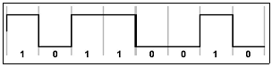
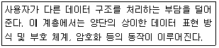
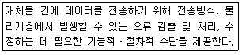
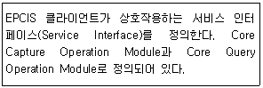
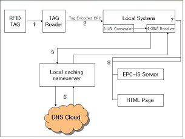
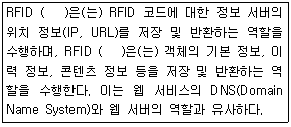
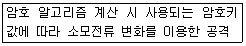
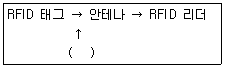
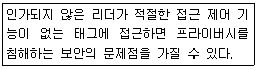

RFID-GL (2012-03-10 기출문제)
1과목: RFID 시스템 개요
1. 다음 중 RFID 미들웨어에 대한 설명으로 옳은 것은?
- RFID미들웨어는 이기종 RFID환경에서 발생하는 대량의 가공되지 않은 데이터를 수집, 필터링하여 의미있는 정보로 변환하여 애플리케이션에게 전달하는 시스템 소프트웨어이다.
- RFID 미들웨어는 EPC 데이터를 수집한 후 이 제품의 상세 정보가 어디에 저장되어 있는지 알기 위해 ONS에 조회할 수 있다.
- RFID 미들웨어는 리더로부터 수집된 모든 정보를 응용 서비스에 전달하는 기능을 수행한다.
- RFID 미들웨어는 애플리케이션들을 연결해 이들을 총괄하는 역할을 한다.
(정답률: 61%)

2. 다음 중 능동형 태그에 대한 설명으로 옳지 않은 것은?
- 태그에 배터리를 부착할 수 있다.
- 수동형 태그에 비해 가격이 저렴하다.
- 수십m 원거리 통신이 가능하다.
- 리더로부터 전원을 공급받을 수 있는 거리의 제한이 있다.
(정답률: 69%)
3. UHF 대역에 비하여 수분, 금속 적용 환경에서 인식률이 저하되는 무선 주파수에 대한 설명 중 옳은 것은?
- ISO/IEC, EPC 태그 등 국제적으로 활성화 전망
- IC카드, 신분증 등 1m 이내에서 활용 가능
- 시스템 가격이 가장 저렴하며 고주파라 불림
- 2.45GHz의 ISM 대역 이용
(정답률: 69%)
4. 다음 중 RFID에 대한 설명으로 옳지 않은 것은?
- RFID 시스템은 리더, 태그, 사용자로 구성되어 사람, 차량 등을 접촉으로 인식하는 기술이다.
- Radio Frequency IDentification의 약자로 전자태그의 고유 주파수를 통해 사물을 인식하는 기술이다.
- 제2차 세계대전 당시 영국 공군이 적 전투기를 식별하는 데 사용되었고, 현재는 민간에 RFID 기술이 도입되어 진화 발전되었다.
- ISO/IEC의 JTC1/SC31 전문위원회를 중심으로 RFID global 표준화가 진행되고 있으며, 한국도 표준이 정립된 상태이다.
(정답률: 62%)
2과목: RFID 기술
5. 바이너리 코드 신호를 캐리어 신호의 주파수를 변조하여 표현하는 변조 방식은 무엇인가?
- FSK(Frequency Shift Keying)
- ASK(Amplitude Shift Keying)
- PSK(Phase Shift Keying)
- OOK(On-Off Keying)
(정답률: 84%)
6. 다음 중 RFID 소프트웨어 구성 요소가 아닌 것은?
- 호스트 애플리케이션(Host Application)
- RFID 시스템 소프트웨어
- RFID 미들웨어
- RFID 네트워크
(정답률: 46%)
7. 다음 그림이 나타내는 인코딩 방식은 무엇인가?

- NRZ(Non Return to Zone)
- 맨체스터(Manchester)
- PIE(Pulse Interval Encoding)
- 밀러(Miller)
(정답률: 66%)
8. 다음 중 RFID 기술의 물리 계층의 물리적 조건과 거리가 먼 것은?
- 주파수
- 태그의 크기와 안테나
- 주변 물체의 크기와 위치
- 리더의 인식거리
(정답률: 45%)
9. 다음 중 후방 산란 변조(Backscatter Modulation) 방식에 대한 설명으로 옳지 않은 것은?
- 리더와 태그는 전자파 결합 방식이다.
- 안테나를 통한 원거리장에서의 전자기파에 의해 이루어지므로 원거리장 조건 보다 가까운 거리에서 이루어진다.
- UHF 수동 태그에서 이용한다.
- 태그의 레이더 단면적을 변화시키는 방식이다.
(정답률: 59%)
10. 다음 중 듀플렉싱(Duplexing)에 대한 설명으로 옳지 않은 것은?
- 단말기에서 송ㆍ수신의 쌍방향 통신을 위한 규약이다.
- RFID에서는 리더기와 태그 간 듀플렉싱은 완전듀플렉싱과 반듀플렉싱으로 나눈다.
- 상향 링크 구간에서는 전력을 전송 하는 방식을 순차 방식(SEQ)이라 한다.
- 하드웨어 관점에서 보면 RFID의 반듀플렉싱은 일반 통신 시스템의 완전듀플렉싱과 유사하다.
(정답률: 49%)
11. 전자파의 송신기와 수신기 사이의 전달 경로에 대한 다음 설명 중 옳지 않은 것은?
- 반사(Reflection)란 입사 전자파의 파장보다 큰 물체에 파가 입사될 때 일어난다.
- 회절(Diffraction)이란 서로 다른 매질에 파가 비스듬하게 입사하면 그 방향이 바뀌는 현상이다.
- 가시거리(Line of Sight)는 송신기와 수신기 경로 중간에 방해 물체가 놓여 있지 않아 육안으로 보이는 거리를 말한다.
- 산란(Scattering)은 파장에 비해 매우 작은 구조물들로 구성되는 매질(medium)을 전자파가 통과할 때 발생 한다.
(정답률: 61%)
12. IC카드, 스마트카드 등 1m 내외에서 활용이 가능하고, 데이터 전송상의 신뢰성이 높은 주파수 대역은 무엇인가?
- 135kHz 이하 대역
- 13.56MHz 대역
- UHF 대역
- 마이크로파 대역
(정답률: 63%)
13. 1948년에 RFID에서 말하는 반사개념에 의한 통신방식에 대해 예측한 사람은 누구인가?
- Mario Cardullo
- Heinrich Rudolf Hertz
- Harry Stockman
- Michael Farada
(정답률: 61%)
14. Inventory 명령어 중 인벤토리 과정에서 사용되는 슬롯의 개수를 조절하기 위해 사용되는 명령어는 무엇인가?
- Select 명령
- QueryRep 명령
- ACK 명령
- Query Adjust 명령
(정답률: 57%)
15. 태그의 부착 방법 중 스트랩을 태그 안테나에 부착하기 위한 방법이 아닌 것은?
- 유도성 필름
- 에폭시에 열을 가해 복원하는 방법
- 에폭시에 UV를 가해 복원하는 방법
- 초음파를 이용한 접합 방법
(정답률: 23%)
16. 다음 중 전력공급 방식에 따른 태그 분류에 대한 설명으로 옳지 않은 것은?
- 전력공급 방식에 따라 태그는 수동형 태그, 능동형 태그, 반수동형 태그로 나뉜다.
- 능동형 태그는 내부에 배터리 전원을 사용하기 때문에 인식거리를 증대시킬 수 있고, 리더와 독립적으로 정보 수집이 가능하다.
- 수동형 태그는 UHF 대역에서도 사용되며 태그의 인식거리가 늘어날 수 있기 때문에 수요가 급증하고 있다.
- 반수동형 태그는 자체 전원을 내장하고 있으며, 능동형 태그와 같이 능동형 송신부를 내장하고 있고, 수동형 태그와 같이 리더에서 공급받은 신호를 후방 산란 변조하는 방식을 사용한다.
(정답률: 38%)
17. 다음 중 ISO/IEC 18000-6C의 상태로 옳지 않은 것은?
- Ready(준비) 상태
- Idle(휴식) 상태
- Arbitrate(중재) 상태
- Secured(보안) 상태
(정답률: 64%)
18. 다음 중 리더의 구성요소가 아닌 것은?
- 송신부(Transmitter)
- 태그(Tag)
- 수신부(Receiver)
- 프로세서부(Processor)
(정답률: 84%)
19. 리더의 송신기 특성에 대한 다음 설명 중 옳지 않은 것은?
- 송신기는 기저대역의 신호를 반송 주파수를 통해 정확히 변조하여 원하는 주파수에 반송 주파수를 유지해야 한다.
- 송신기는 전력 소모를 줄이고 큰 간섭신호를 발생하는 것을 피하기 위해 사용 중이 아닐 때는 꺼져야 하며, 읽어야 할 태그들이 있을 경우에는 빨리 켜져야 한다.
- 리더는 많은 태그 중 하나를 먼저 선택하여 송신 신호를 보내야 한다.
- 송신신호의 왜곡은 허가받은 주파수 대역 이외의 주파수에서의 방사로 나타나는데, 이는 허가받은 사용자들을 방해할 수 있으므로 이를 낮추어야 한다.
(정답률: 57%)
20. 다음 중 RFID에서 순방향 링크와 역방향 링크의 방향을 옳게 나타낸 것은? (순방향 링크, 역방향 링크)
- 리더→태그, 태그→리더
- 태그→리더, 리더→태그
- 리더→다른 리더, 다른 리더→리더
- 태그→다른 태그, 다른 태그→태그
(정답률: 58%)
21. RFID 리더의 핵심은 송신기와 수신기가 함께 어우러져 태그와 통신하는 무선 송수신기에 있다. 다음 중 송신기가 만족해야 하는 특성을 옳게 나열한 것은?
- 면밀성, 효율성, 높은 불요파 방사
- 유연성, 효율성, 낮은 불요파 방사
- 정확성, 면밀성, 높은 불요파 방사
- 유연성, 면밀성, 낮은 불요파 방사
(정답률: 75%)
22. RFID 리더의 구성 요소 중 프로세서부의 기능이 아닌 것은?
- 미들웨어 시스템과 네트워크 통신을 제공한다.
- 리더의 기능을 제어한다.
- 태그에 전달할 고주파 신호를 발생하는 발진기 기능을 한다.
- 리더의 메모리를 제어한다.
(정답률: 48%)
23. 다음 중 리더에서 호스트 컴퓨터와 통신을 수행하는 인터페이스가 아닌 것은?
- RS-232
- USB
- 이더넷
- ONS
(정답률: 55%)
24. 다음 중 리더의 송신부에 해당하지 않는 것은?
- 태그에 전달할 고주파 신호를 발진한 발진기
- 발진기의 고주파 신호를 증폭하는 전력 증폭기(선택사항)
- 태그와의 통신을 위해 고주파 신호의 주파수, 위상, 진폭을 변화시키는 변조기
- 변조된 주파수 신호에서 기저대역 정보를 추출하는 복조기
(정답률: 46%)
25. 다이폴 타입 태그 안테나에서 주파수 910MHz에서 파장이 33cm라고 가정할 때 반파장의 길이는 얼마인가?
- 16.1cm
- 1.65cm
- 33cm
- 16.5cm
(정답률: 60%)
26. 다음 중 안테나에 대한 설명으로 옳지 않은 것은?
- 리더 안테나는 원형편파를 갖도록 설계한다.
- 안테나 효율은 안테나 입력전력에 대한 안테나 방사전력의 비로 보통 0.5~0.9사이이다.
- 유도성 부하를 가지려면 안테나의 길이가 16.5cm 보다 작아야 효율적이다.
- 안테나는 송수신 역할이 다르지만 하나의 안테나로 송수신을 모두 할 수 있다.
(정답률: 35%)
27. 다음 중 기본적인 안테나와 관련된 용어와 그에 대한 설명으로 옳은 것은?
- 안테나 손실 : RFID 기술에서 쓰인 안테나의 개수 중 분실 및 손상된 안테나를 뜻한다.
- 안테나 입력전력 : 안테나에 유입되는 총전력 중 가장 많이 사용하는 주요 전력의 비이다.
- 안테나의 방사전력 : 안테나에서 공중으로 방사되는 총전력이다.
- 안테나 이득 : 안테나 입력전력에서 안테나의 손실을 뺀 것과 같다.
(정답률: 55%)
28. 다음 중 자동 라벨 부착기와 가장 거리가 먼 것은?
- Wipe-on 라벨 부착기
- 선별기
- 공기압 라벨 부착기
- 트리거 장치
(정답률: 50%)
29. 빠르게 부착할 수 있기 때문에 대부분 생산라인에서 사용되는 RFID 주변기기는 무엇인가?
- 급속 라벨 부착기
- Wipe-on 라벨 부착기
- Wipe-off 라벨 부착기
- 공기압 라벨 부착기
(정답률: 43%)
30. 다음은 ISO 7계층 중 어떤 계층을 설명한 것인가?

- 네트워크 계층(Network Layer)
- 전송 계층(Transport Layer)
- 세션 계층(Session Layer)
- 표현 계층(Presentation Layer)
(정답률: 53%)
31. 다음 중 RFID 리더 API에 대한 설명 중 옳지 않은 것은?
- 각 리더 제조사들은 편리한 프로그램 라이브러리를 제공함으로써 해답을 제시하고 있으며 이것이 바로 API라고 정의할 수 있다.
- 리더와 상위시스템간 지속적인 통신은 필요 없다.
- 상위 시스템이 어떤 프로그램 언어로 제작되느냐에 따라 서로 다른 형태의 API가 제공된다.
- 텍스트 명령어 세트만 정의하여 제공하기도 한다.
(정답률: 52%)
32. 다음이 설명하는 계층은 무엇인가?

- 네트워크 계층(Network Layer)
- 전송 계층(Transport Layer)
- 세션 계층(Session Layer)
- 데이터 링크 계층(Data Link Layer)
(정답률: 43%)
33. 다음 중 RFID 미들웨어의 주요 기능이 아닌 것은?
- RFID 도입 비용 절감
- 이기종 복수 RFID 리더 관리
- RFID 데이터 처리
- 응용 시스템과의 연동
(정답률: 60%)
34. 다음 중 RFID 미들웨어의 활용효과로 가장 거리가 먼 것은?
- RFID 애플리케이션 개발 생산성 증대
- 기업의 RFID 도입비용 절감 및 생산성 향상 효과
- RFID 정보공유 효과
- RFID 태그 인식률 향상
(정답률: 49%)
35. RFID 미들웨어 표준화에 대한 설명 중 옳은 것은?
- ISO/IEC 18000 SSI에서는 기존 국제표준과 사실 표준을 통합한 새로운 미들웨어 표준규격인 ISO/IEC JTC1 SG31 표준화를 진행하고 있다.
- 미국이 Main Editor를 담당하여 표준화를 주도하고 있다.
- SSI는 기존 EPCglobal의 ALE 규격을 수용하면서 다양한 RFID 하드웨어 및 non-EPC 표준을 지원 함으로써 여러 산업 분야에 용이하게 적용할 수 있다.
- ALE 규격을 구현한 미들웨어 간에는 상호 연동이 불가능하다.
(정답률: 35%)
36. RFID 미들웨어에 대한 설명 중 옳지 않은 것은?
- 애플리케이션들을 연결해 데이터를 교환할 수 있게 해주는 기능도 있다.
- 대량의 가공된 데이터를 필터링하여 애플리케이션에 전달하는 기능이 있다
- 개발기간을 단축시킨다.
- 리더와 응용의 중간에 위치하여 다수의 리더기를 관리한다.
(정답률: 23%)
37. EPCIS에 대한 설명 중 옳지 않은 것은?
- EPCIS는 현재 데이터와 과거의 데이터를 다룬다.
- EPCIS 보다 하위층에 존재하는 요소들은 EPC 정보의 실시간 처리를 다룬다.
- EPCIS는 EPCglobal 네트워크 아키텍처의 하위 레벨 보다 다양한 기업 IT 환경에서 운영된다.
- EPCIS는 단순히 가공되지 않은(raw) EPC에 대한 관찰들을 다룬다.
(정답률: 56%)
38. 다음이 설명하는 것은 무엇인가?

- 추상화 데이터 모델 계층(Abstract Data Model Layer)
- 데이터 정의 계층(Data Definition Layer)
- 서비스 계층(Service Layer)
- 바인딩(Binding)
(정답률: 27%)
39. 다음 중 EPCIS framework의 특징이 아닌 것은?
- 개별화
- 계층 구조
- 모듈화
- 확장성
(정답률: 38%)
40. 다음 그림에서 RFID 리더가 EPC 코드를 읽는 과정으로 가장 적절한 것은?

- 1, 2
- 3, 4
- 5, 6
- 7, 8
(정답률: 32%)
41. 다음 ( ) 안에 들어갈 알맞은 말을 순서대로 옳게 나열한 것은?

- ODS, ONS
- OIS, OTS
- 정보 서버, 디렉토리 시스템
- 디렉토리 시스템, 정보 서버
(정답률: 59%)
42. ODS(Object Directory Service) 중 National ODS는 각 기관의 Local ODS의 위치 정보를 제공하는 역할을 하는데, 이를 운영하는 기관은 어디인가?
- DoD
- OECD
- CASPIAN
- 한국인터넷진흥원
(정답률: 38%)
3과목: 정보보호
43. 다음 중 RFID 사업 추진 시 프라이버시 보호 원칙의 적용에 대한 설명으로 옳지 않은 것은?
- RFID 도입단계 : 법률 규정 및 소비자의 동의 이외에는 RFID 태그에 개인정보 기록 금지와 동의 획득시 기록 목적 등을 미리 고지해야 한다.
- RFID 부착/탈착 : RFID 태그 부착 제품의 구입 이후에는 원칙적으로 그 기능을 제거 및 비활성화, 그리고 RFID 태그 부착의 경우에는 기능 제거 방법 등을 설명 또는 표시해야 한다.
- RFID를 통한 정보연계 : RFID 태그의 물품정보와 개인정보의 연계를 금지하고, 개인정보와 연계하는 경우에는 미리 통지 또는 공표해야 한다.
- RFID를 통한 개인정보 수집 : 이용/제공/파기 등에 대하여는 현행 정보통신망법을 준용해야 하고, 생체 이식 금지, 그리고 리더가 설치된 장소를 소비자가 알 수 있도록 표시해야 한다.
(정답률: 45%)
44. 공정정보 규정의 원칙 중 “RFID를 활용하는 사업자는 태그와 리더가 사용되는 목적을 공지해야만 한다.”에 해당하는 것은?
- 개방성 혹은 투명성
- 목적에 대한 기술
- 수집 제한
- 책임
(정답률: 36%)
45. EPC의 RFID 프라이버시 위험요인 분석 중 “바코드와 달리 RFID는 EPC로 ID가 지정되어, 지구상의 모든 사물에 유일한 ID를 갖게 할 수 있다.”는 다음 중 어떤 위험요인에 대한 설명인가?
- 숨겨진 태그
- 물품에 대한 유일한 식별 정보
- 대용량 자료 수집
- 개인 추적과 프로파일링
(정답률: 34%)
46. 다음 중 EPC의 RFID 프라이버시 위험 요인이 아닌 것은?
- 숨겨진 태그
- 물품에 대한 유일한 식별 정보
- 관리 정보
- 대용량 자료 수집
(정답률: 61%)
47. 태그가 현재 송신하는 정보를 알아내거나 태그 내부의 저장된 정보가 노출된 경우에라도 그 정보를 가지고서 과거의 송신 정보를 알아낼 수 없도록 해야 한다는 보안 요건은 무엇인가?
- 태그 정보 노출에 대한 안전
- 서비스 거부 공격에 대한 안전
- 전방향 안전성(Forward security) 보장
- 불구분성(Indistinguishability) 보장
(정답률: 54%)
48. RFID 보안기술 중 다음이 설명하는 물리적인 공격으로 가장 적절한 것은?

- 단순 전력 분석(Simple Power Analysis)
- 차분 오류 분석(Differential Fault Analysis)
- 칩 내부 공격(Chip Rewriting Attack)
- 타이밍 분석(Timing Analysis) 공격
(정답률: 30%)
49. 다음 중 RFID 리더와 통신 프로토콜에 대하여 저가형 태그 내에 구현할 수 있는 소프트웨어적인 방법을 제공하기 위한 RFID 보안의 주요 논리적인 해결방안이 아닌 것은?
- 암호화 알고리즘을 이용한 기법
- 프록싱(Proxying) 접근
- 해시 기반 및 난수 등을 이용한 기법
- 인간적 인증(Human Authentication)
(정답률: 50%)
50. RFID에 대한 공격기법 중 다음 ( ) 단계에서 위협이 되는 공격기법은 무엇인가?

- 스니핑(Sniffing)
- 서비스 거부(Denial of Service)
- 트래픽 분석(Traffic Analysis)
- 버퍼 오버플로(Buffer Overflow)
(정답률: 45%)
51. 다음이 설명하는 RFID에 대한 공격 방법은 무엇인가?

- 트래픽 분석 공격
- 스니핑
- 도청 공격
- 중간자 공격
(정답률: 22%)
52. RFID에 대한 공격 기법 중 네트워크상에서 전송되는 패킷 정보 또는 모든 정보를 송ㆍ수신자가 인지하지 못하는 상태에서 읽어보는 공격 기법은 무엇인가?
- 스니핑(Sniffing)
- 스푸핑(Spoofing)
- 스캐닝(Scanning)
- 재전송 공격(Replay Attack)
(정답률: 38%)
53. 다음 중 RFID에 대한 일반적인 공격 기법으로 가장 거리가 먼 것은?
- 도청 공격
- 트래픽 분석 공격
- 재전송 공격
- 타이밍 분석 공격
(정답률: 26%)
4과목: 도입절차
54. 업무나 프로세스를 개선하기 위해 RFID시스템을 도입 했을때 적용 업무에 따른 주요 고려사항 중 가장 거리가 먼 것은?
- 태그의 크기
- 태그에 저장할 코드 용량
- 태그에 저장할 코드 외 정보 용량
- 태그 밀집 환경에서의 인식 성능 요구 사항
(정답률: 62%)
55. 다음 중 RFID 도입 시 RFID 리더의 사용 환경과 조작 환경에 따른 리더 선택의 고려사항과 거리가 먼 것은?
- 사용할 장소의 온도, 습도
- 사용의 편의성
- 선형편파 안테나의 수
- 확장 및 연동성
(정답률: 50%)
56. 다음 중 RFID 도입시 주파수를 선정할 때 고려 사항이 아닌 것은?
- 태그의 인식률
- 인식거리 및 데이터 처리 측면
- 경제적 측면
- 기술적 측면
(정답률: 13%)
57. 다음 중 RFID 도입시 시스템 부분의 고려사항과 거리가 먼 것은?
- 모델링
- 시스템 개발 및 측정
- 재무계획
- 아키텍처
(정답률: 66%)
58. RFID 도입을 위한 고려사항 중 적용 환경에 따른 고려사항과 가장 거리가 먼 것은?
- 전파 밀집 환경
- 금속 성분이 다재한 환경
- 수분에 노출된 환경
- 소음이 많이 발생하는 환경
(정답률: 63%)
59. 다음 중 RFID 시스템 측정 절차를 옳게 나타낸 것은?
- 설계－업무분석－구축－전환－운용
- 업무분석－설계－구축－전환－운용
- 설계－구축－업무분석－전환－운용
- 업무분석－설계－구축－운용－전환
(정답률: 54%)
60. 다음 중 RFID 도입의 정성적 목표가 아닌 것은?
- 오류율 감소
- 이력 관리
- 품질 보증
- 검품 효율화
(정답률: 45%)
61. 다음 중 RFID 시스템의 업무 기능 구조를 정의할 때의 관점과 가장 거리가 먼 것은?
- 비즈니스 프로세스 모델
- 비즈니스 개념 모델
- 데이터 흐름도
- 유스케이스(Use case) 다이어그램
(정답률: 50%)
62. 투자성과 분석의 주요 항목 중 소프트웨어 비용항목과 가장 거리가 먼 것은?
- 네트워크 장비
- 애플리케이션 인터페이스 시스템
- 데이터베이스 시스템
- 미들웨어 시스템
(정답률: 61%)
63. RFID 도입을 위한 목표 분류 방법 중 단기적이고 간접적인 목표의 고려사항은 의무화 이행, 오랜 기간 직접적인 이익을 얻기 위한 준비작업 등이 있다. 다음 중 예로 가장 적절한 것은?
- 출입문 관리 및 고속도로 통행료 징수
- 공급망 실시간 추적
- 할인마트의 요구에 의한 공급업체 팔레트와 상자별 태그 부착
- 수송 중인 상품의 온도 센싱
(정답률: 52%)
64. 다음 중 RFID 운영 측면에서의 고려사항과 거리가 먼 것은?
- RFID 인식률 유지방안
- RFID 정보 변화방안
- RFID 회수율 유지방안
- RFID 교환 및 파기
(정답률: 33%)
5과목: RFID 표준 및 법제도
65. 다음 중 ISO/IEC 표준과 주파수 대역이 잘못 짝지어진 것은?
- 18000-2 : 135kHz 이하
- 18000-3 : 13.56MHz
- 18000-4 : 2.45GHz
- 18000-6 : 433MHz
(정답률: 50%)
66. 다음 중 RFID 표준화에 대한 설명으로 옳지 않은 것은?
- RFID 기술이 가지고 있는 기능들의 효율성을 극대화
- RFID 태그와 리더 간의 통신 방식
- 사용하는 전파의 주파수 대역별 Air Interface
- 다양한 규격의 제품이 사용되므로 시장이 확대
(정답률: 52%)
67. RFID 태그 중 능동방식이고 고속 전송이 가능하며, 컨테이너 관리 등 실시간 위치 추적이 가능한 주파수 대역의 ISO/IEC 표준 규격은 무엇인가?
- ISO/IEC 18000-4
- ISO/IEC 18000-5
- ISO/IEC 18000-6
- ISO/IEC 18000-7
(정답률: 59%)
68. 다음 중 FHSS(Frequency Hopping Spread Spectrum) 기술을 사용하는 나라는?
- 프랑스
- 독일
- 영국
- 미국
(정답률: 66%)
69. 항 재밍(Anti-Jamming) 등을 목적으로 개발되었고, 빠른 시간에 랜덤하게 여러 주파수로 호핑하여 간섭 및 충돌에 강하다는 장점 때문에 널리 사용되고 있는 방식으로 가장 적절한 것은?
- FHSS
- LBT
- EIRP
- ERP
(정답률: 59%)
70. UHF(433MHz) 대역에서 국내의 공중선 전력 및 공중선 이득의 최대 출력 값은 얼마인가?
- 0.56dBm(EIRP)
- 5.6dBm(EIRP)
- 56dBm(EIRP)
- 560dBm(EIRP)
(정답률: 40%)
71. 다음 중 유럽의 2.45GHz 대역의 주파수가 CEPT/ERC/REC70-30과 ETSI EN300 400-1(v1.3.1)에 의해 규정되어 있는 내용과 가장 거리가 먼 것은?
- 수신기 요구 조건
- 송신기 요구 조건
- 시험 방법
- 비용
(정답률: 47%)
72. 다음 중 항공 수하물의 신속 . 정확한 판독과 분류를 위해 주로 사용되는 주파수 대역은 무엇인가?
- 125kHz 대역
- 433MHz 대역
- 2.45GHz 대역
- 13.56MHz 대역
(정답률: 23%)
73. EPC 코드 종류 중 컨테이너 코드로써 개개의 물체에 식별 번호를 부여하기 위해 만든 코드로 적절한 것은?
- GID
- SGTIN
- SSCC
- SGLN
(정답률: 61%)
74. 다음 중 Gen2 태그의 특징 중 옳지 않은 것은?
- 하나의 태그로 전 세계에서 모두 사용이 가능하도록 국제적 호환성 제공
- 초당 640KB 이상의 빠른 속도
- 벤더마다 별도의 데이터 메모리 지원
- 태그 LOCK 기능은 있지만 Kill 기능은 없음
(정답률: 56%)
75. 다음 중 안전한 모바일 RFID 서비스를 이용하기 위해 제공해야 할 것과 가장 거리가 먼 것은?
- 서비스 이용자의 의식 개혁
- 서비스의 내용 공개화
- 프라이버시 법안
- 해킹 대응 기술 및 안전한 서비스를 위한 보안 서비스 모델 수립
(정답률: 60%)
76. 다음 중 모바일 RFID 서비스를 위한 시스템 구성에 대한 설명으로 옳지 않은 것은?
- 이동 통신망은 무선 접속을 통하여 모바일 RFID 서비스를 제공하는 역할을 수행한다.
- OIS(Object Information Service)는 서버의 일종으로 RFID 태그 인식 시 휴대폰을 통하여 궁극적으로 보여줄 정보가 콘텐츠 서버의 어느 위치에 있는지를 지정해 주는 기능을 수행한다.
- 무선 인터넷 인프라는 서비스 제공의 적정성을 판단하고, 유ㆍ무료 서비스 제공에 대한 과금 기능을 수행하는 인프라로서 각 이동통신 사업자의 망 내에 위치하는 시스템이다.
- RFID 리더는 휴대폰에 내장 또는 외부 결합 형태로 작동한다.
(정답률: 39%)
77. 다음 중 900MHz 대역 RFID의 Air interface 표준은 무엇인가?
- ISO/IEC 18000-1
- ISO/IEC 18000-3
- ISO/IEC 18000-6
- ISO/IEC 18000-8
(정답률: 77%)
78. OID(Object IDentification) 기반 RFID 코드체계 식별에 대한 설명으로 옳지 않은 것은?
- 네트워크, 서비스, 알고리즘, 표준문서 등 광범위한 영역을 구분하는 식별체계로서 계층별로 구성된다.
- 모바일 RFID 코드에 OID가 각각 할당되어 있다.
- IATA에서 정의한 항공 수화물 코드 등에도 OID가 각각 할당되어 있다.
- EPC 코드에는 OID가 존재한다.
(정답률: 45%)
79. 다음 중 항공산업 관련 국제조직이 아닌 것은?
- IAT
- IATA
- ICAO
- ACI
(정답률: 52%)
80. 다음 중 mCode에 대한 설명으로 옳지 않은 것은?
- 48비트부터 128까지의 길이를 갖는다.
- TLC(Top Level Code)는 대규모 서비스를 위한 기관에 할당된다.
- 모바일 RFID 코드 종류의 선택은 사업 규모 및 태그의 메모리 크기 등을 기준으로 한다.
- 현재 128비트 길이가 주로 사용되고 있다.
(정답률: 49%)